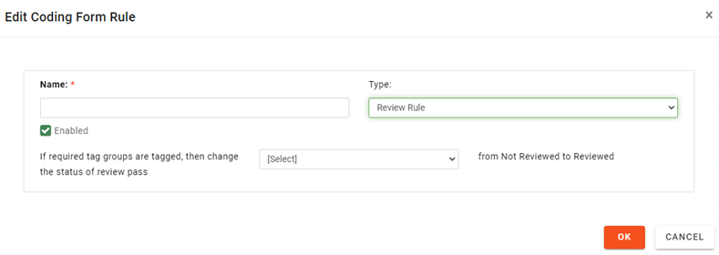

Complete the needed steps in Create New Coding Forms to access Coding Forms configuration and define fields and/or tags for the coding form.
Expand the Rules section of the Coding Form configuration area, then click Add. Complete the Edit Coding Form Rule dialog box as described in the following steps.
Name: Enter a name that describes the rule’s purpose. Complete step 4 or 5, depending on the type of rule being defined.
Review Rule: This rule automates changing the review status of documents when all required tags have been applied. To define this type of rule:
-
For Type, select Review Rule.
-
In the review pass list, select the review pass to which the rule will apply.
-
Click OK.

Form Rule: Form rules are enforced when a user edits fields in Record View or applies tags. A user cannot select a new document for editing/tagging until all rules are met. Form rules help enforce needed review actions and promote consistency amongst users.
For the Type, select Form Rule. Create the rule statement by completing the following steps from left to right in the dialog box.
IF statement:
-
Select the item type—Field, Tag, or Tag Group that is the subject of the “if” portion of the rule.
-
Select the specific field, tag(s), or tag group(s). Note: Only the fields and tag groups/tags that have been added to the form will be available.
-
If multiple tags or tag groups are selected, choose the way in which they should be considered: All of these must match the condition or Any of these must match the condition.
-
Select the needed condition. For example, for tags or tag groups, the conditions are Tagged or Not Tagged.
THEN statement:
-
Select the item type—Field, Tag, or Tag Group to which the “then” portion of the rule applies.
-
Select the specific field, tag(s), or tag group(s).
-
If multiple tags or tag groups are selected, choose the way in which they should be considered: All of these must match the condition or Any of these must match the condition.
-
Select the required condition. For example, for fields, the conditions are must Be Empty or Not Be Empty.
-
Read the rule statement to ensure it is as intended; make changes if needed.
-
If the rule should not yet be active, clear the Enable option.
-
When finished, click OK.
The following example shows a rule in the Rules area of the Coding Form configuration area. In this example, if the Date field is empty, then the Yes tag in the Date Confirm. Needed tag group must be applied.

Repeat these steps to create other rules.
When all rules are defined, review the order of rules in the Rules tab of the Coding Form dialog box. Rules are enforced in order from top to bottom.
If the order of rules should be changed:
-
Select a rule to be reordered.
-
Click Up or Down until the rule is in the desired location.
-
Repeat these steps to reorder other rules.
Complete any other aspects of Creating New Coding Forms.
When the coding form definition is complete, click Save.